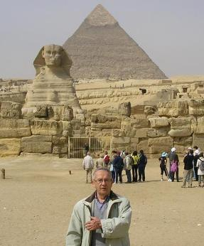
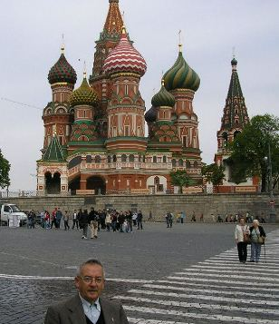

Volver a la página principal
 LA VIDA, ESE DON...
LA VIDA, ESE DON...
| Autor: Fausto del Castillo Estéban (Madrid, España) |
 |
 |
¡Nuevos! Cómo nació el festejo de la Navidad... Un poco de historia
Cómo nació el festejo de la Navidad... Un poco de historia
En los dos primeros siglos del cristianismo, había un desconocimiento total sobre la fecha de nacimiento de Jesús y
durante las dos primeras centurias de la era cristiana solo celebraban la muerte y resurreción
 RECUERDO
RECUERDO
Qué mala suerte tuve al conocerte
y qué azar fue el haberte conocido.
Jamás sufrí tan pérfido castigo
que la insistencia de volver a verte.
Inerme, inmóvil, estática, pasiva
ante el murmullo que constante
flotaba en la corriente de tu oído
sin que por ello te sintieras aludida.
Fueron sentidas las alocadas cartas
que brotaban de mi alocada mente
con el vértigo sumido en el torrente
y aglutinando diversas cataratas.
No sé si mía fue la culpa descuidada
o tu insistencia voraz de sementera
queriendo descubrir aún no trillada
la espiga recia que no sembró la era
Sí, haberte conocido fue un reflejo
de ese cristal de nácar que es tu cara
y que guardo como forma venturada
en el punto crucial del entrecejo,
con fuerza sensorial, en mi profundo
y portearla feliz, a ese otro mundo.
Siendo consciente de que la suerte
es compañera del continuo caminar
no hay que dar pábulo al sobrio altar
que bajo tierra hundida, baldía, sin labrar
nos levantará al final la muerte.
FC- novbre 2013
Volver al menú principal
Algunos aportes anteriores
El mosaico añil
Caminando por veredas donde el pie no sabe de la métrica ni le preocupa a su andarina testa, que surca otros caminos.
Caminos de quimeras donde el paso se limita y el cerebro navega en constantes vaivenes meciéndose en la duda, al asalto de la frontera que existe
entre lo verídico y el artificio de la duda. En esa situación donde el aire que respira está viciado y el oxígeno se envuelve en el torbellino de su prensil latido,
no cabe mas respuesta que salir del cuerpo material y volar; no cabe otro sentido.
El apátrida, vagabundo nato, apartado como anacoreta de su propia vida. se refugia como paria de su mundo donde no tiene mas ley ni otros impuestos
que los propios, y envuelto en prendas andrajosas consume la miseria de su vida.- ¿se puede ser feliz de tal manera?, ¿acaso se encuentra con su Dios en soledad?
Satanás embauca a los mendigos y les ofrece limosnas en sus sueños.
Los envuelve, los seduce dulcificando sus descansos para tentarles cuando despiertos, sin nada que yantar, se mecen en sus sueños.
Pobre menesteroso que para procurar el mendrugo que rosigándole le harte: como barco a la deriva, sin rumbo pero altivo,
navega por ciudades, poblados, villas y aldeas con el apoyo de un cayado; muy cansado se detiene siempre firme para que no se
derrumbe la osadía que su hambre representa. La necesidad y el frío -testigos inmorales- de los que no puede participar otro inoportuno mendigo.
Sumido en su infortunio, como famélico conjunto que representa la piel que cubre su osamenta descarnada y consumida, arrastra su miseria pero nunca se da por vencido.
Se acomoda en un sillar que encuentra en el camino y despierto siente lo que el Diablo en su mente sosegada le enseña; poco a poco
el cansancio le domina y se sumerge en un real y profundo sueño.
Allá abajo, en el mítico e infernal Averno, protegido del frío se abriga con el calor que desprenden las fraguas del fuego eterno.
En ese báratro percibe un olor agradable, delicioso, placentero de algo que se cocina dentro......
Acomodado, nota el sensible tacto del hilo y se encuentra envuelto en madejas de algodón y lino.
Sobre divanes extendidos observa lujosas prendas para cubrir su esqueleto altivo; advierte que se mueve sosegado y tranquilo en un vehículo
sin nombre que le reposa y le acerca los caminos; ve extensos valles con cantarines riachuelos y escarpados oteros nevados y azulinos, espejados por el cielo.
Ha izado el vuelo salienda de las calderas del Infierno a donde le invitó Lucifer con malicioso intento y extiende sus sentidos para disfrutar de lo que su retina contempla.
No quiere despertar de la maravilla en que se encuentra sumergido y un milagro prenda por siempre el somnoliento descanso de sus ojos;
admite el tránsito y queda inerme con esa sonrisa leve como el que muere helado por el frío.
¡El mismo gesto tiene!
La Muerte en deslizada singladura, liviana y grácil lo prolonga a un mundo nuevo, que sólo conoce el mísero indigente
y que no alberga otra esperanza que lograr la paz y el descanso en el mosaico añil del cielo.
 Poemas...
Poemas...
Aunque quisiera, no puedo descifrar ¿por qué? ese llanto se desliza por tu manto derramándose en el suelo.
Con tan leve movimiento, que escapado al sentimiento con el aire se marchita, sin tener otro consuelo que diluir el anhelo en gota pura bendita.
Alba como el agua clara suspensa sobre la Nada, para buscar otro vuelo como si fuera un señuelo donde prende la alborada.
Y con tal grácil sonrisa que se perfila en tu labio de rojiza calentura ocultas la dentadura que son cuentas de rosario, con esa enorme blancura del vapor del incensario; el llanto que cae en tu manto te dan belleza y frescura. |
¿Acaso sabes tú lo que es un sueño? un sueño no es fluido, no se toca, no tiene cabello, iris, mejilla, boca; brotando el alba resulta muy pequeño
El sueño es el reducto de la nata donde se enconde el cebo que cata el juvenil mancebo como experimento de una rata.
Sueña en nocturno el ingeniero, con la clave que levanta presumida el altar de su sueño arquitectónico, siéndo Morfeo el brazo misionero de esa misión presunta de la vida de alcanzar el culmen faraónico.
Sueña el niño ese profundo sueño que alimenta el fluir de su esqueleto, como si soñar fuera el secreto que confía la madre a su pequeño.
La joven sueña con notar el imposible de un dáctil suave posado en su mejilla; de esa suave manera, tan sencilla que altere sus zonas mas sensibles.
Cansado de soñar pasan los años con carencia de sueños que contar.
Sólo, los restantes pasos por andar. Lo demás es todo un desengaño.
Un poeta dijo: La vida es sueño, y el poeta, de esa frase, se hizo dueño. |
La despedida.(soneto)
Herido por la paz de tu agonía regresas al submundo sin lamento. Profunda es la pena que yo siento envuelta de soledad, sin compañia
Del color de la muerte vas teñida. Vestida de sudario va tu carne . No tienes otra dádiva que darme que el beso helado de la despedida.
Te me vas por la cuenta de la Nada, como el poniente sol en el invierno de esa forma total y tan precisa.
Como daga ardiente en mí se clava. Como brasa escapada del infierno. Como toro al que infieren la divisa.
Fc.12-5-12
|
Adiós, amigo ------ Adiós amigo; siento tu ausencia en la fosa profunda del latido y como a un calvario sometido en sudor frío navega mi conciencia
Que lejana parece en la distancia aquella sensación pura y sentida, cuando tienta el alma conmovida la excelsa luminaria de la infancia.
Nuestros padres, los tíos, el colegio. Los juegos sorteando peatones, pelotas, cromos, tebeos y peones; gozosa infancia, ''bendito privilegio"
Que vida tan feliz con los amigos y esas amigas, lindas compañeras que afloraban como sementera en los campos aúreos del trigo.
Y la vida pasó dejando la semilla de esa amistad tan poco duradera que sólo ya, detento por quimera lo que ha tiempo, fue una maravilla
Contra la muerte que airadamente insulta, te traigo flores que huelan a distancia y puedan abrigar el tul de su fragancia la estéril tierra que tu cuerpo oculta.
7 JUNIO 2013 f.c. |
Soy español, madrileño y en situación de productividad -jubilado- por edad, que así lo dictan las normas; pero sigo produciendo para el estado por medio de impuestos, patrimonio, y economía que invierto para que otros en activo puedan perseverar en sus trabajos. Desde muy joven -14 años- me pusieron a trabajar por necesidad económica de la familia, como en las de todas, que habían pasado por una contienda bélica. No cursé estudios superiores, pero sí el bachiller de la época, donde adquiri una cultura general bastante aceptable, gracias a un profesor amante de su profesión. Fuera del trabajo, aparte de mis diversiones relativas a la edad, leía, leía mucho para conocer, informarme de lo que podía. Ese inmenso mundo donde flotaba, me ofrecía un extenso abanico y quería conocerlo. Los países y sus monumentos, los personajes que lo levantaron, las gestas de sus conquistas, los decubrimientos de todas las ramas del saber, y un largo etc... Despues de ese largo período de vida laboral, llegó la jubilaciòn y con ella, el júbilo de la independencia para disfrutar del mundo, de la vida, de la salud y de recuperar al máximo ese tiempo invertido para cumplir una obligación. Y viajé por mi país y fuera de él, a otros paises; cercanos, lejanos y....en ello continúo... La vida es un don que hay que expandir a los cuatro vientos; el ver amanecer un nuevo día, te incita a ello.
|
Volver a la página principal